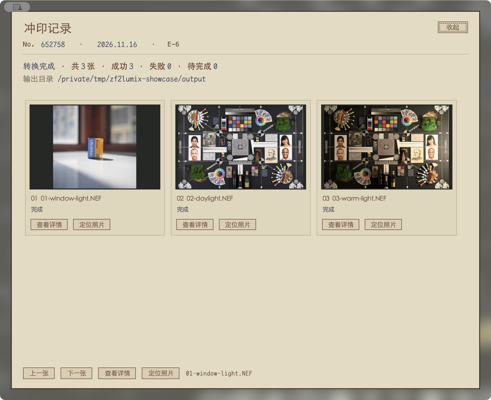

NIKON Zf / S5M2 RW2
Zf2Lumix
14 位 NEF → RW2
本机转换，供 LUMIX Lab 导入。
macOS 实际截图 点击画面放大
导入、拖放、多选。照片与边字一起滚动。
旋钮与按键
自动 / 日光 / 暖光
颜色校准
拖动、滚轮或方向键。释放后吸附到挡位。
转换
按键下沉，指针与 LCD 随真实进度更新。
冲印记录
纸签展开批次。
从缩略图到详情，再定位回胶片。
- 导入
- ⌘ + O
- 移除 / 撤销
- Delete / ⌘ Z
- 冲印记录
- ⌘ + I
- 收起
- Esc

文件与画面
原片保留 · 逐张校验
.NEFNikon Zf / 14 bit
校准 · 编码 · 回读
.RW2S5M2 兼容 RAW
.json参数、裁切与校验记录
6000 × 4000全幅有效画面
4000 × 40001∶1 机内裁切
按源裁切保留构图。
输出重名时另存。
Zf2Lumix
1.0.1 · macOS Apple Silicon
本地签名 · 已包含 Python 与转换依赖
兼容性与验证范围
支持 Nikon Zf 的 14 位 RGGB NEF。输出磁盘需支持硬链接，macOS 建议本地 APFS。既有 LUMIX Lab 对照覆盖 ISO800 标准格调样本。内嵌预览由 LibRaw 生成。
查看完整说明 ↗